대시보드
수익 · 자산 관리
01. 메인 대시보드 & 보스 체크리스트
이번 주 예상/실현 수익, 월드별 주간 결정 제한(x / 90개), 목표 자산 달성률 및 예상 완료 기간, 메이플포인트 시세 환산 카드(메이플월드 펫 서식지 포함)를 상단에 표시합니다. 하단 캐릭터 카드에서 수동/자동 모드 전환, 보스 클리어 체크, 주간 수익 공유 이미지 저장을 지원합니다.
Maple Income은 다수의 캐릭터에 대한 주간·월간·일간 보스 결정 수익, 보스 드롭 아이템 및 보관함, 메소 가계부, 사냥 타이머·기록은 물론, NEXON Open API와 연동된 인게임 스케줄러 자동 동기화·착용 장비·전투력/스펙·성장 히스토리·강화 기록을 한곳에서 제공하는 데스크톱 앱입니다.
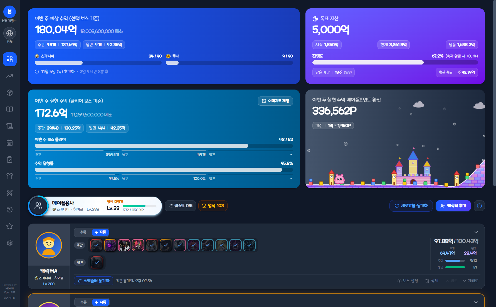
복잡한 주간 보스 결정 계산부터 NEXON Open API 기반 스펙·숙제·강화 통계까지 하나의 앱에서 해결합니다.
캐릭터당 주간 12개 제한과 월드당 주간 90개 결정 판매 한도를 자동 반영하여 가장 비싼 결정 순으로 최적 수익을 계산합니다. 월간 보스(검은 마법사) 잠금 및 KST 목요일 00시 자동 결산을 지원합니다.
NEXON Open API의 메이플 스케줄러 API와 연동하여 인게임에서 처치한 주간/월간 보스와 일일·주간 심볼 퀘스트, 에픽 던전, 몬스터파크, 길드 컨텐츠 현황을 클릭 한 번으로 동기화합니다.
인게임 툴팁 형태의 착용 장비 상세 확인, 전투력·HEXA 코어·V매트릭스·유니온·심볼·어빌리티 통합 조회, 기간별 경험치/전투력 성장 차트, 스타포스·잠재능력·큐브 강화 기록 및 확률 비교를 제공합니다.
모든 기록과 API Key는 외부 서버 전송 없이 사용자 PC 내부 SQLite DB에 안전하게 보관됩니다. 한 앱에서 최대 5개 계정을 분리 운영할 수 있으며 파일 백업·복원을 지원합니다.
설치부터 NEXON Open API Key 등록, 캐릭터 불러오기, 보스 프리셋 적용까지 누구나 1분 만에 설정할 수 있습니다.
Maple-Income-Setup-x.y.z.exe를 다운로드하여 설치합니다.
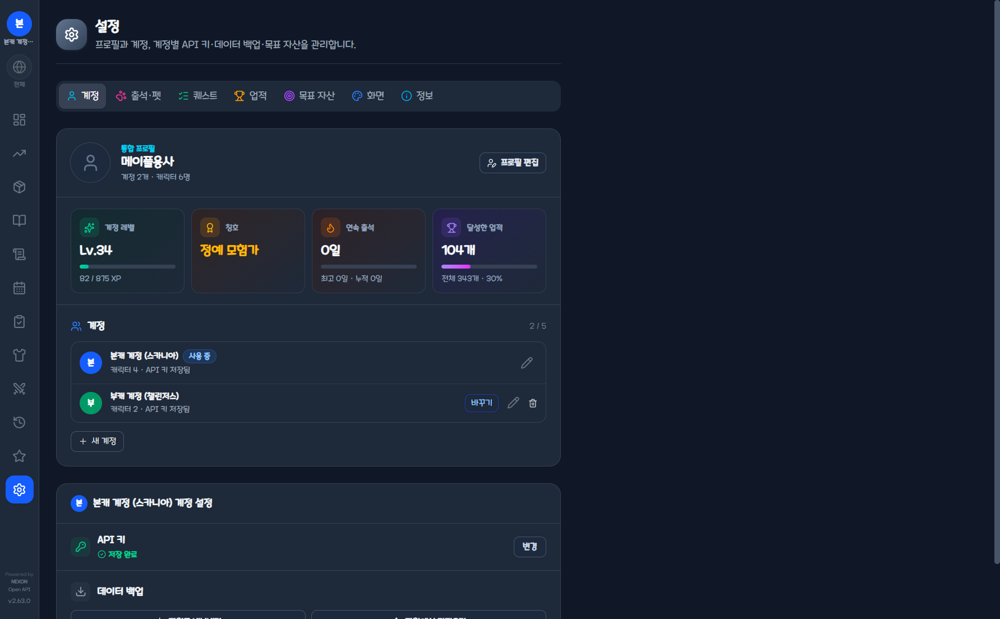
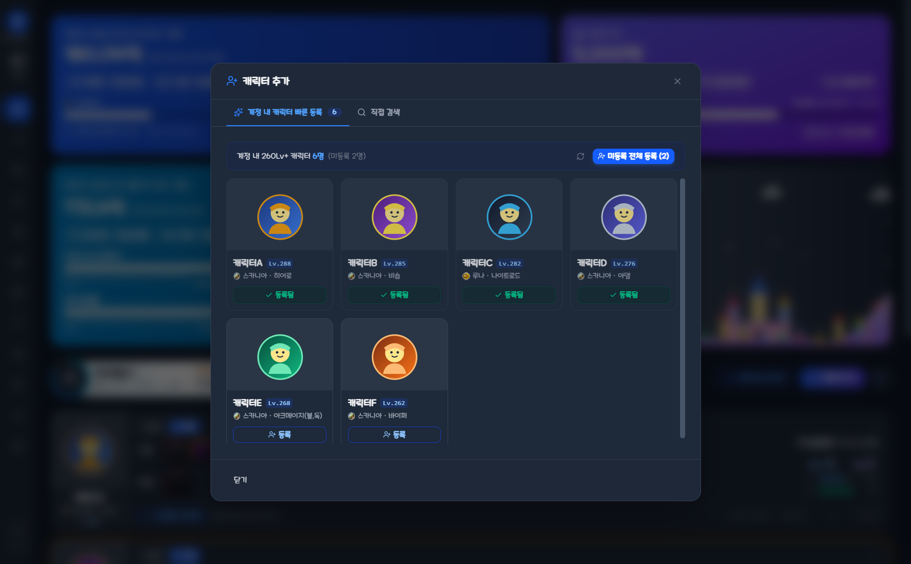
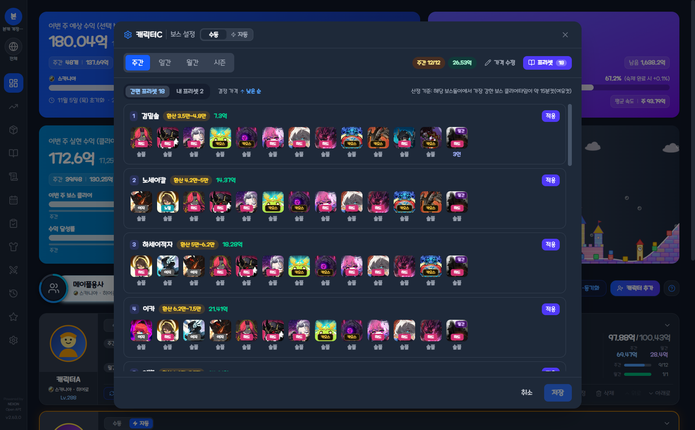
사이드바의 모든 메뉴와 핵심 모달 화면입니다. 카테고리 탭으로 원하는 기능을 필터링하거나 이미지를 클릭해 크게 확인할 수 있습니다.
이번 주 예상/실현 수익, 월드별 주간 결정 제한(x / 90개), 목표 자산 달성률 및 예상 완료 기간, 메이플포인트 시세 환산 카드(메이플월드 펫 서식지 포함)를 상단에 표시합니다. 하단 캐릭터 카드에서 수동/자동 모드 전환, 보스 클리어 체크, 주간 수익 공유 이미지 저장을 지원합니다.
NEXON Open API의 계정 캐릭터 목록 조회를 통해 계정 내 260레벨 이상 캐릭터를 레벨 순으로 불러와 아바타와 함께 카드로 보여줍니다. [미등록 전체 등록]으로 한 번에 추가하거나 닉네임으로 직접 검색할 수 있습니다.
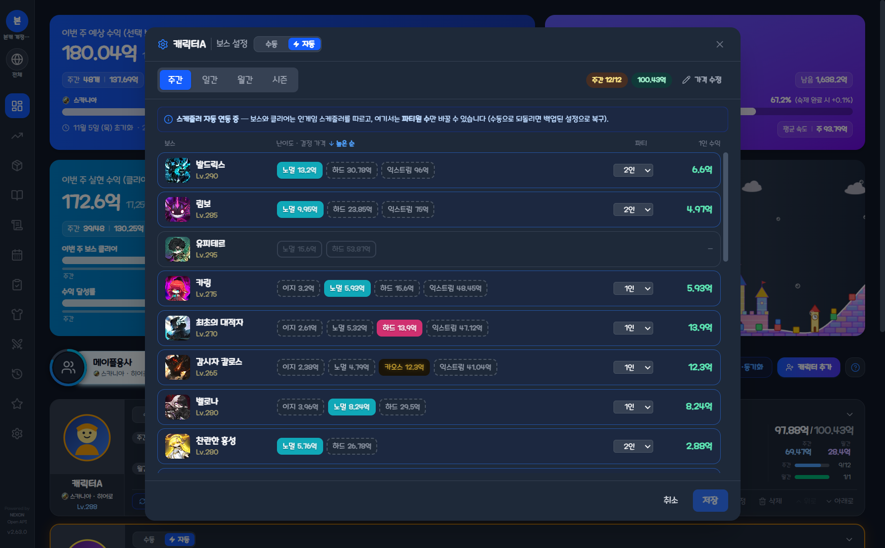
주간·일간·월간·시즌 보스 탭별로 난이도와 파티 인원(1~6인)을 설정하며, 선택한 보스의 1인 수익과 주간 12개 한도를 실시간으로 보여줍니다. 인게임 패치로 결정 가격이 변경된 경우 [가격 수정] 토글로 직접 가격을 입력할 수도 있습니다.
스펙 구간별 대표 보스돌이 라인업 18종(검밑솔, 노세이칼, 하세이적자, 익스우, 카칼솔, 익적솔 등)을 권장 HEXA 환산 주스탯 구간 및 1인 수익 합계와 함께 제공하여 부캐릭터 보스 구성을 즉시 마칠 수 있습니다.
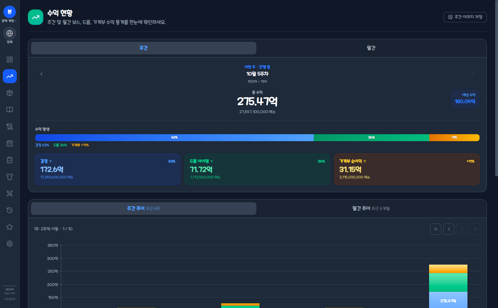
보스 결정석, 보스 드롭 아이템, 가계부 순수익을 합산한 주간·월간 수익 추이 그래프와 캐릭터별 기여도, 드롭 아이템 상위 내역을 분석합니다. [주간/월간 이미지 저장](캐릭터명 가리기 옵션 지원)으로 깔끔한 결산 카드를 저장할 수 있습니다.
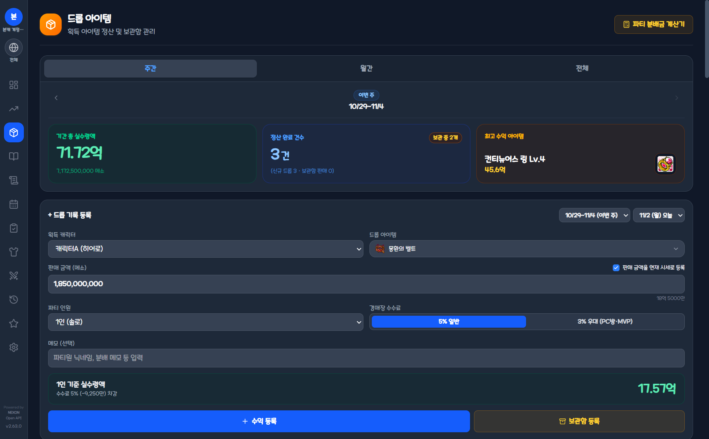
칠흑/광휘의 보스 장신구, 리레/컨티 링, 에테르넬 장비 등 주요 보스 드롭 아이템의 판매 금액, 경매장 수수료(5% / 3%), 파티 인원 분배금을 자동 계산합니다. 아직 판매하지 않은 아이템은 드롭 보관함에 넣어 두었다가 실제 판매 시점에 수익으로 반영할 수 있습니다.
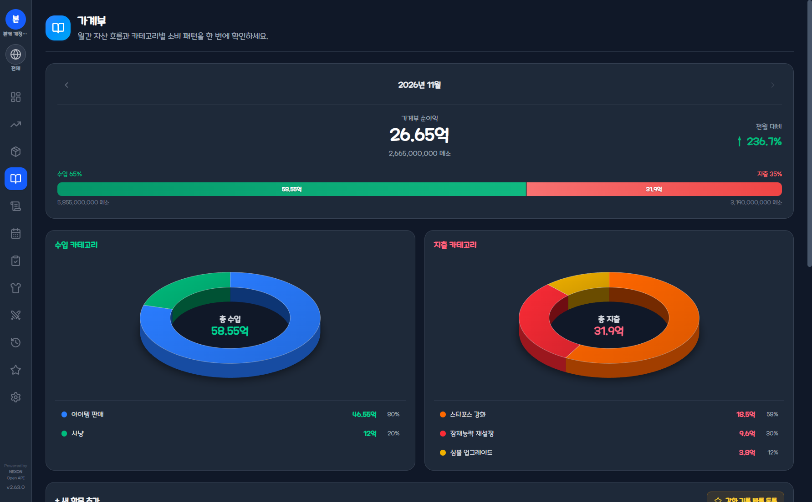
아이템 판매, 사냥 수입, 스타포스 강화, 잠재능력 재설정, 심볼 업그레이드 등 인게임 메소 수입과 지출을 카테고리·캐릭터별로 기록합니다. 모든 메소 입력란에는 실시간 한글 금액 변환 힌트(조/억/만)가 함께 표시됩니다.
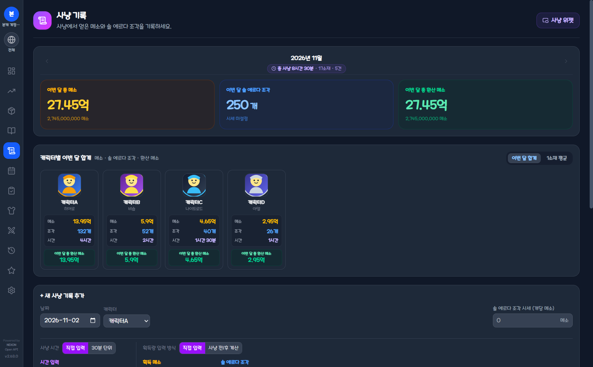
재획비(120분)·소재비(30분) 단위 사냥 타이머, 획득 메소 및 솔 에르다 조각 수량 기록, 시간당 평균 사냥 수익 통계를 제공합니다. 게임 화면 위에 띄워 두는 미니 사냥 위젯(PIP)과 반복 알람(버프/회수 알림)도 함께 지원합니다.
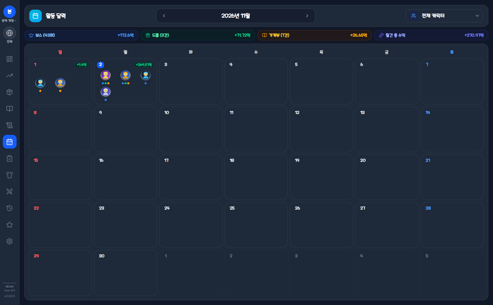
한 달 동안의 보스 처치, 드롭 아이템 획득, 가계부 수입/지출, 사냥 기록을 날짜별 달력 위에서 한눈에 확인하고, 특정 날짜를 선택해 당일 상세 활동 내역을 모아 볼 수 있습니다.
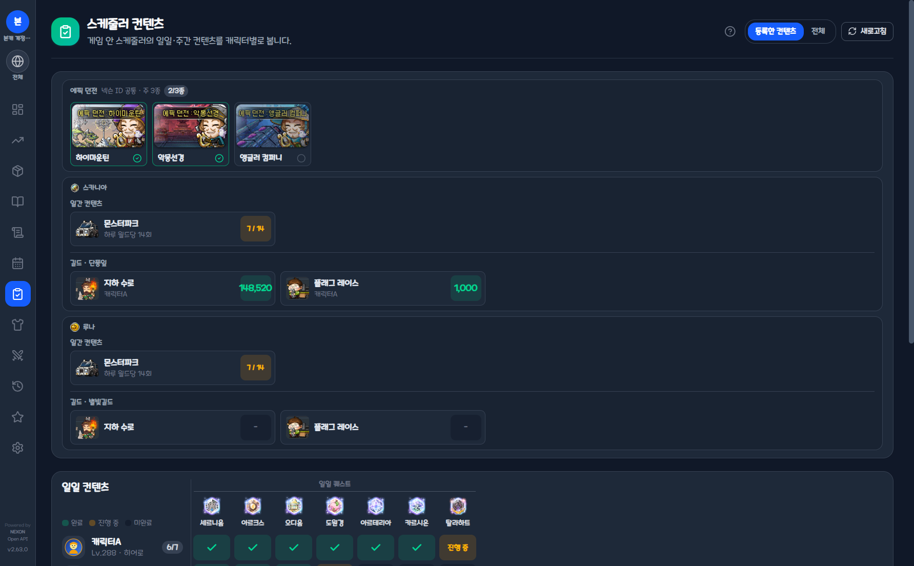
메이플 스케줄러 API를 통해 계정 공통 에픽 던전, 월드 공통 몬스터파크 · 익스트림 몬스터파크, 길드 공통 지하 수로 · 플래그 레이스 점수, 그리고 캐릭터별 아케인/그란디스 일일·주간 퀘스트 및 무릉도장 완료 현황을 한 장의 표로 보여줍니다.
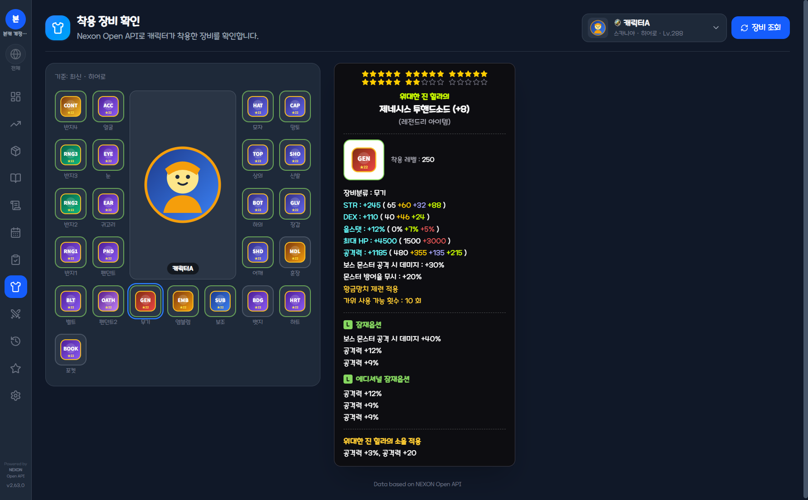
등록된 캐릭터의 착용 장비 슬롯을 그리드로 표시하며, 각 장비를 클릭하면 스타포스 수치, 스탯 분해(기본 + 스타포스 + 주문서 + 추가옵션), 잠재능력·에디셔널 잠재능력, 소울 옵션, 익셉셔널 강화를 인게임 툴팁 형태로 상세하게 표시합니다.
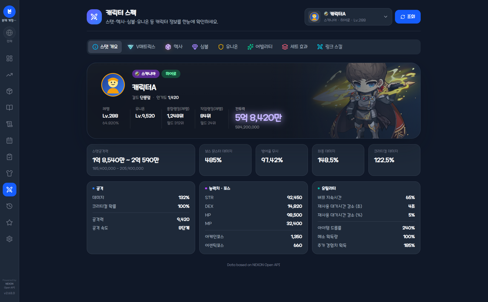
전투력 구간별 강조 표기, 종합/월드/직업 레벨 랭킹, 핵심 전투 지표(스탯공격력, 보스 데미지, 방어율 무시, 최종 데미지, 크리티컬 데미지)와 공격/능력치·포스/유틸리티 세부 스탯, 심볼·어빌리티·세트 효과·링크 스킬·V매트릭스를 탭별로 조회합니다.
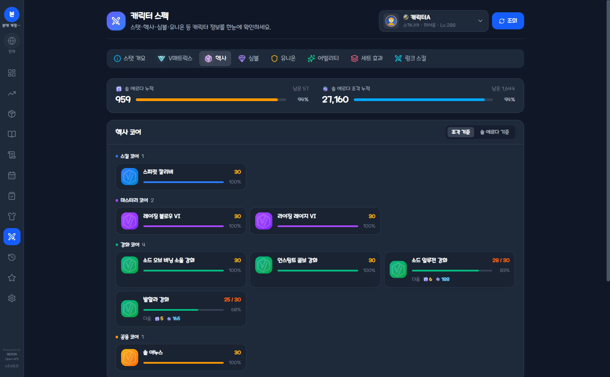
6차 스킬 코어, 마스터리 코어, 강화 코어, 공용 코어(솔 야누스)의 레벨과 누적 소모/남은 솔 에르다 및 조각 진행도를 계산하며, HEXA 스탯 코어 I·II·III의 메인/서브 스탯 레벨을 한눈에 보여줍니다.
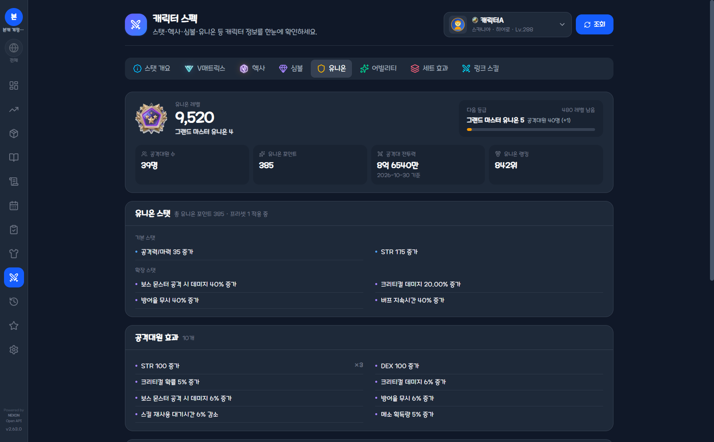
유니온 레벨·등급, 공격대 전투력 및 유니온 순위, 적용 중인 유니온 스탯과 공격대원 효과, 유니온 챔피언 휘장 효과, 유니온 아티팩트 레벨 및 크리스탈 유효 기간을 한 화면에서 확인합니다.
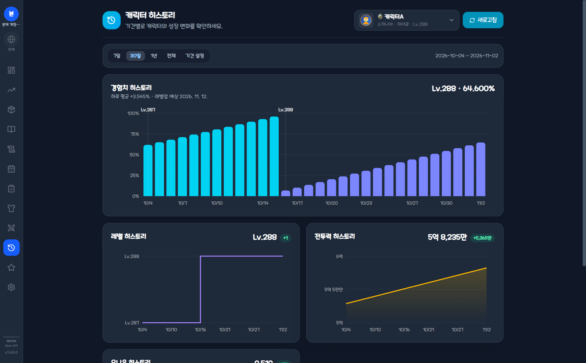
선택한 기간(최근 7일/30일/90일/전체) 동안 캐릭터의 일자별 경험치 획득량과 레벨업 예상일, 레벨 상승 계단 그래프, 전투력 변화, 유니온 레벨 추이를 시각화합니다. 월드 리프로 OCID가 변경된 캐릭터도 이전 기록을 자동으로 이어서 표시합니다.
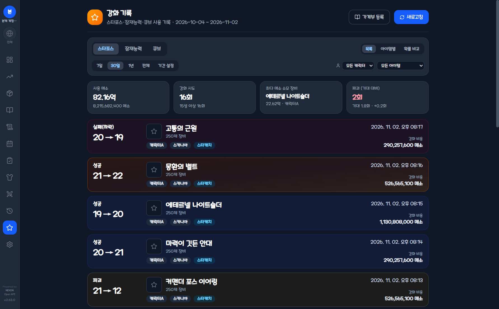
NEXON Open API 강화 이력(스타포스, 잠재능력 재설정, 큐브)을 조회하여 총 소모 메소, 파괴 횟수, 등급 상승 횟수를 집계하고 공식 확률 대비 실제 결과를 비교 분석합니다. 강화 지출을 가계부로 바로 내보내는 빠른 등록 기능도 제공합니다.
최대 5개의 메이플스토리 계정을 분리 등록하여 각 계정의 API 키·캐릭터·수익 기록을 독립적으로 관리할 수 있습니다. JSON 로컬 백업 파일 내보내기/불러오기 및 선택적 클라우드 스냅샷 동기화를 지원합니다.
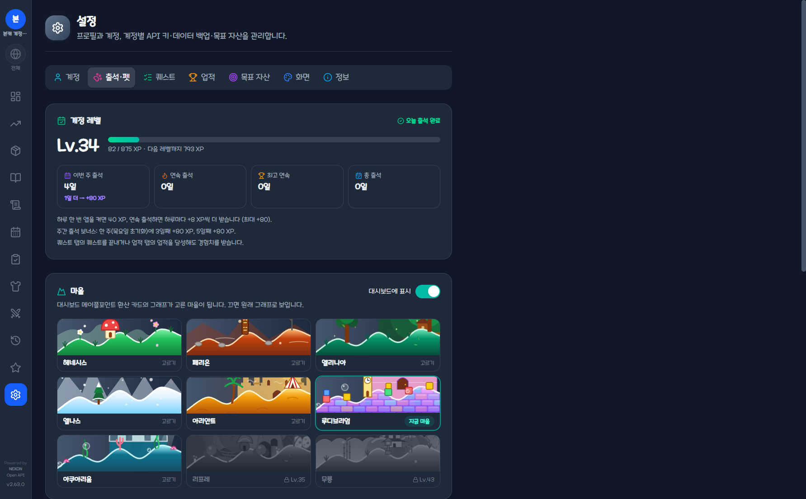
매일 앱 실행 및 일일/주간 퀘스트 달성으로 계정 레벨(Lv.1~99)을 올리면 헤네시스·루디브리엄·아쿠아리움·리프레·무릉 등 9곳의 마을 배경과 달팽이·핑크빈·혼테일·판다 등 20종의 펫이 해금되어 대시보드에서 뛰어놉니다.
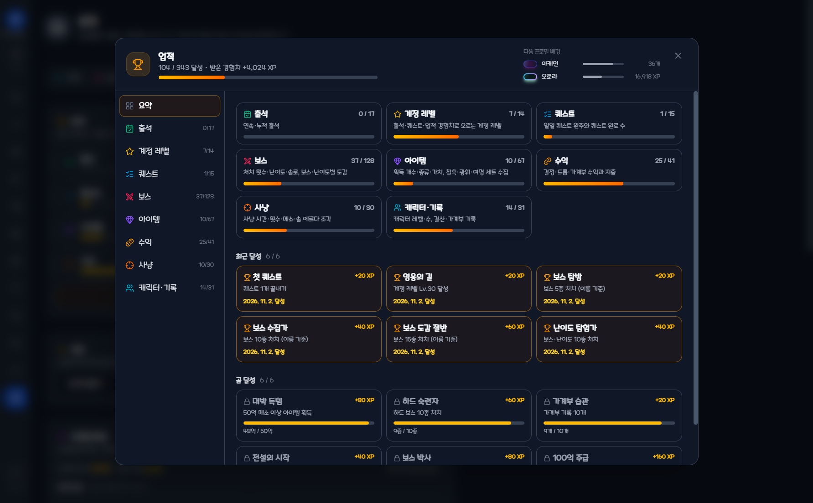
출석, 계정 레벨, 퀘스트, 보스 처치(보스·난이도별 도감 82종 포함), 드롭 아이템 컬렉션(칠흑·광휘·여명·익셉셔널), 누적 수익, 사냥, 캐릭터 성장 등 8개 분야 343개 업적을 달성하고 칭호와 레전드리·아케인·칠흑·광휘 프로필 배경 스킨을 해금할 수 있습니다.
/maplestory/v1/scheduler/character-state): 주간/월간 보스 처치 자동 동기화 및 일일/주간 심볼 퀘스트·에픽 던전·몬스터파크·길드 컨텐츠 현황 표시/maplestory/v1/history/*): 스타포스, 잠재능력 재설정, 큐브 사용 내역 및 통계open.api.nexon.com으로 직접 호출합니다.